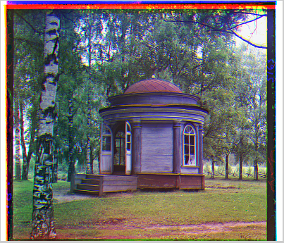

Algorithm for alignSingle.m
Step 1. Calculate imgradient of the image to make two layer become more similar.
Step 2. Calculate the score when used circshift() 1 by 1.
Score = Green/Red layer - Blue layer , then sum up all the element in the matrix.
Smaller Score mean Green/Red layer is more similar to Blue layer.
Step 3. After used 2 for-loop Circshift(),we can find the smaller score.(Saved shifted value in findVMin and findHMin).
Step 4. Use circshift() to shift the image to the Smaller Score point and return the image.
Algorithm for alignMulti.m
Step 1. Filter the image with gaussian and calculate the imgradient of the image
Step 2. Resize the image to (image)*2^(-pyramid_levels) for each pyramid_levels.
Example. When there is a 3200*3200 image, we will resize it to 1600*1600 then 800*800 , 400*400 , 200*200 where pyramid_levels = 5.
Step 3. Used alignSingle algorithm to the smaller image, get the findVMin and findHMin values.
Step 4. Double the value of findVMin and findHMin and adjust them by using circshift(),
searching near pixels (around 20*20) to find out it there have a new smaller score.
Doing this process until the image size is equal to the original.
Step 5. Adjust is finish,return the image to the main function.
Example (For alignMulti). First find the VMin and HMin (green point). then use the doubled size of that image, and double the value of VMin and HMin. And adjust it by finding the NEW MIN score in yellow area.
Result (for alignSingle.m):Here are 5 image after process by imgAlignSingle. Original image can find in code file.
IMG00971
IMG00978
IMG01018
IMG01023
IMG01040
DiscussionThe algorithm is not fast enough. For a 300*400 image, need to use Circshift() 300*400*2 times,the time complexity is almost O(n^2).
Sloving: Only consider use Circshift() in the blue area for a 300*400 image(Fig.3), it may lower the accuracy but can make the algorithm faster than 4 times.
O(width*height*2) => O(width*0.5 * height*0.5 *2) => 1/4 * O(width*height*2)
(Fig. 3)
The algorithm accuracy still need improvement. In image IMG01040, after the shifting, we can still see the performance is not as good as other image.
Using gradients
Unless aligning based on RGB similarity, it also used gradients.
Here are the different between no shifting, no gradients and used gradients
| No shifting | No gradients | Used gradients |
 |
 |
-- Finish --